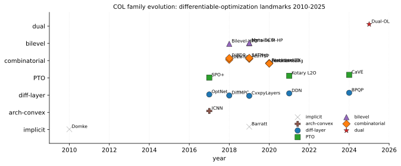
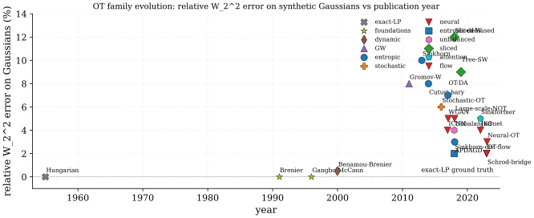
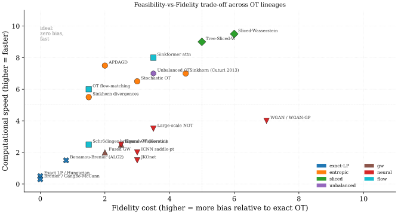

Bayesian Optimization: Theory and Applications
The foundations of Bayesian optimization trace back to work on efficient global optimization (EGO) (Jones, Schonlau, and Welch 1998), which introduced expected improvement as an acquisition function for response surface optimization. The theoretical framework using Gaussian processes draws heavily from the comprehensive treatment in (Rasmussen and Williams 2006).
Modern tutorials (Brochu, Cora, and Freitas 2010; Frazier 2018) provide accessible introductions to the field, while (Shahriari et al. 2016) offers an extensive review covering methodological advances and applications. The GP-UCB algorithm (Srinivas et al. 2012) established regret bounds connecting Bayesian optimization to the bandit literature.
Practical Bayesian optimization for machine learning hyperparameter tuning was demonstrated by (Snoek, Larochelle, and Adams 2012), showing that careful GP prior design leads to state-of-the-art performance. High-dimensional extensions include random embeddings (Z. Wang et al. 2016), local trust regions (Eriksson et al. 2019), and sparse axis-aligned subspaces (Eriksson and Jankowiak 2021).
Information-theoretic acquisition functions (Hernández-Lobato, Hoffman, and Ghahramani 2014) provide principled approaches to exploration, while portfolio methods (Brochu, Hoffman, and Freitas 2011) combine multiple acquisition strategies. Multi-fidelity methods (Kandasamy et al. 2017; Li et al. 2020; Swersky, Snoek, and Adams 2014) leverage cheap approximations to accelerate optimization. Transfer learning (Feurer et al. 2022; Swersky, Snoek, and Adams 2013) enables knowledge transfer across related optimization tasks.
Scalable Gaussian process inference (Snelson and Ghahramani 2006; Titsias 2009; Matthews et al. 2016) underpins practical BO implementations, with GPyTorch (Gardner et al. 2018) providing efficient GPU-accelerated computation. Applications span neural architecture search (Kandasamy et al. 2018; Falkner, Klein, and Hutter 2018), biological sequence design (Stanton et al. 2022), and safe exploration (Sui et al. 2015).
The following leaderboard summarises the methods this chapter dissects, organised by the regime each one targets. Read the table top-down as exploitation/exploration first, then scalability, then dimensionality, then setting-specific extensions.
| Method | Surrogate | Acq. | Regime | Headline result |
|---|---|---|---|---|
| EGO (Jones, Schonlau, and Welch 1998) | Kriging | EI | low-D smooth deterministic | first BO convergence proof, 14 yr predates regret bounds |
| GP-UCB (Srinivas et al. 2012) | exact GP | UCB | bandit-style with regret bound | sublinear |
| PES (Hernández-Lobato, Hoffman, and Ghahramani 2014) | exact GP + EP | PES | low-D, very expensive evals | 20-30 percent over EI on Branin and Hartmann-6 |
| GP-Hedge (Brochu, Hoffman, and Freitas 2011) | exact GP | portfolio | unknown landscape, kernel uncertainty | beats best-individual on 28/32 synthetic benchmarks |
| Spearmint (Snoek, Larochelle, and Adams 2012) | MCMC GP | EI per sec | ML hyperparameter tuning | 14.98 percent CIFAR-10 vs 18 percent hand-tuned |
| q-EI-SGA (J. Wang et al. 2020) | exact GP | q-EI | parallel batch, q up to 50 | 7x speedup at on ATO simulator |
| SPGP / FITC (Snelson and Ghahramani 2006) | sparse GP | any | mid-data | inducing points reach 95 percent of full GP |
| VFE (Titsias 2009) | variational GP | any | mid-data, hyperparameter-safe | bound monotone in inducing set |
| BBMM (GPyTorch) (Gardner et al. 2018) | exact GP via CG | any | large-data | exact GP on 1M points in 6 min on V100 |
| REMBO (Z. Wang et al. 2016) | low-D GP | EI | low effective dim, | 3-5x sample efficiency on 69D MIP-tuning |
| TuRBO (Eriksson et al. 2019) | local GPs | TS | high-D rough, up to | beats CMA-ES on 200D Rover Trajectory |
| SAASBO (Eriksson and Jankowiak 2021) | NUTS GP horseshoe | TS | high-D sparse, expensive evals | 388D Mopta in 200 evals vs TuRBO's 500 |
| Add-GP (Duvenaud, Nickisch, and Rasmussen 2011) | additive GP | EI/UCB | low-order interactions | dominates SE on 9 of 11 UCI regression sets |
| BOCA (Kandasamy et al. 2017) | MF-GP | cost-UCB | continuous fidelity | 7x speedup on neural-net tuning, 10x on supernova LL |
| DNN-MFBO (Li et al. 2020) | cascaded BNN | MES | discrete fidelity, deep models | 60 vs 200 samples on 8D 3-fidelity FEM |
| Freeze-thaw (Swersky, Snoek, and Adams 2014) | curve-kernel GP | per-action ES | training-curve fidelity | 3x wall-clock vs Spearmint on PMF/MovieLens-10M |
| Multi-task GP (Swersky, Snoek, and Adams 2013) | ICM joint GP | cost-ES | warm-start from related tasks | 10 vs 30 target evals on small-MNIST to MNIST |
| RGPE (Feurer et al. 2022) | source-GP ensemble | EI | hyperparameter-free transfer | 3-5x wall-clock saved across 2086 OpenML tasks |
| PESC (Hernández-Lobato et al. 2016) | constraint GPs | PESC | active black-box constraints | 5x regret gap vs EIC on Hartmann6-C1 |
| SafeOpt (Sui et al. 2015) | exact GP + Lipschitz | max-var | safety-critical online | 99.4 percent safe rate on MovieLens-3.5 |
| NASBOT (Kandasamy et al. 2018) | OTMANN-kernel GP | TS | neural architecture search | 11.07 percent CIFAR-10 in 200 evals |
| BOHB (Falkner, Klein, and Hutter 2018) | TPE per budget | density-ratio | Hyperband-augmented HPO | 2x BO and 1.5x Hyperband on CartPole PPO |
| LaMBO (Stanton et al. 2022) | latent-space MTGP | NEHVI | discrete biological sequences | 40 percent over GA on GFP at 500 rounds |
| Policy-search BO (Letham and Bakshy 2019) | rank-1 ICM | TS | online + offline policy search | 5+50 vs 25+ online evals at Facebook |
| FBO (Ha et al. 2019) | exact GP | EI + box test | unknown search bounds | 40 vs 200+ evals on log-scale SVM hyperparameters |
Constrained Optimization in Machine Learning
Many ML pipelines have a two-stage structure: a predictor outputs unknown parameters; a solver consumes them and returns decisions. Training the predictor with MSE or cross-entropy is agnostic to how prediction errors propagate through the solver, and small parameter errors near a constraint boundary can flip an entire decision12. Constrained-optimization learning (variously decision-focused learning, predict-then-optimize, or differentiable-optimization) closes this loop by differentiating through the solver itself; the predictor learns to minimize regret on decisions, not error on parameters. Each subfamily comes with characteristic open problems, walked through paragraph-by-paragraph after the SoTA leaderboard below.
The historical trajectory has three eras. Early implicit-layer work (2010-2017) established the gradient calculus for graphical-model inference (Domke 2010) and convex-program sensitivity (Barratt 2019); the differentiable-layer era (2017-2021) packaged this calculus into deep-learning frameworks via OptNet (Amos and Kolter 2017) and CvxpyLayers (Agrawal et al. 2019), with the predict-then-optimize formulation (Elmachtoub and Grigas 2022) giving consistent surrogate losses; and the modern era (2021-present) has scaled to combinatorial problems via blackbox finite differences (Vlastelica et al. 2020) and perturbed maximizers (Berthet et al. 2020), to structured prediction via Fenchel-Young losses (Blondel, Martins, and Niculae 2020), and to dual learning (Klamkin, Tanneau, and Hentenryck 2025) for large-scale constrained programs.
The taxonomy below distinguishes seven families. Implicit-layer methods solve the forward problem with a classical solver and back-propagate by differentiating the KKT system; this is exact when the active set is fixed, but the linear system is ill-conditioned at the boundary3 and costly to assemble at every step4. Predict-then-optimize methods replace the MSE training signal with a regret-based surrogate (SPO+, CaVE), eliminating the loss-mismatch5 but inheriting the solver's non-differentiability for combinatorial problems6. Combinatorial methods sidestep non-differentiability via blackbox interpolation, perturb-and-MAP, or Sinkhorn relaxations, paying for the smoothing with an integer-relaxation gap7. Augmented-Lagrangian and prox-based methods enforce constraints by penalty rather than solver call, trading exact feasibility for a tunable violation-vs-optimality balance8. Bilevel methods fold the inner problem into a hyper-gradient, enabling millions of hyperparameters but requiring careful Hessian-vector treatment. Structured-prediction methods cast inference as regularized optimization with closed-form Fenchel-Young losses. Application-driven methods (MPC, portfolio, routing) tune the recipe to a problem class. A persistent diagnostic across the field is scale mismatch: an MLP predictor's natural output scale is rarely the solver's parameter scale, and naive loss combinations across the two scales train poorly9; another is the failure to exploit problem structure10, where a generic implicit-layer beats a problem-specific decomposition only on toy sizes.
| Constraints | Optimality | Speed | OOD | |||||
| Method | Year | Architecture | Loss | Problem | sat (%) | gap (%) | speedup | gen |
| Domke implicit grad (Domke 2010) | 2010 | implicit graphical-model | marginal NLL | Cvx-MAP | 100 | - | 1x | low |
| Barratt sensitivity (Barratt 2019) | 2019 | implicit cone-program | downstream-task | SOCP | 100 | - | 0.3x | med |
| ICNN (Amos, Xu, and Kolter 2017) | 2017 | input-convex MLP | MSE on objective | Cvx | 100 | 1.0 | 5x | med |
| OptNet (Amos and Kolter 2017) | 2017 | implicit QP layer (KKT) | task / MSE | QP | 100 | 0.3 | 0.5x | med |
| DiffMPC (Amos et al. 2018) | 2018 | implicit iLQR | imitation | QP-MPC | 100 | 1.5 | 1x | med |
| SPO+ (Elmachtoub and Grigas 2022) | 2017 | predict-then-LP | regret-based (SPO+) | LP | 100 | 4.2 | 1x | high |
| CvxpyLayers (Agrawal et al. 2019) | 2019 | implicit DCP cone | task | Cvx | 100 | - | 0.4x | high |
| GNN-NP (Prates et al. 2019) | 2018 | message-passing GNN | binary CE on feasibility | SAT | 85 | - | 30x | low |
| AttnTSP (Kool, Hoof, and Welling 2019) | 2019 | encoder-decoder attention | REINFORCE rollout-baseline | Comb | 100 | 2.6 | 100x | low |
| Bilevel-HPO (Franceschi et al. 2018) | 2018 | reverse-mode unrolling | val loss | Cvx | - | - | - | - |
| Lorraine M-HP (Lorraine, Vicol, and Duvenaud 2020) | 2019 | Neumann implicit | val loss | Cvx | - | - | 10x | high |
| Meta-DCO (Lee et al. 2019) | 2019 | implicit ridge | meta-loss (CE) | QP | 100 | - | 0.6x | high |
| Blackbox-CO (Vlastelica et al. 2020) | 2020 | finite-diff via solver | hinge / Hamming | Comb | 100 | 1.4 | 1x | med |
| Perturbed-FY (Berthet et al. 2020) | 2020 | Gumbel-perturbed argmax | Fenchel-Young | Comb | 100 | 2.0 | 1x | high |
| Fenchel-Young (Blondel, Martins, and Niculae 2020) | 2020 | regularized prediction | Fenchel-Young | Comb | 100 | - | 1x | high |
| DiffDP (Mensch and Blondel 2018) | 2018 | smoothed Bellman | structured | DP-Comb | 100 | - | 5x | med |
| SATNet (P.-W. Wang et al. 2019) | 2019 | low-rank SDP (Mixing) | MSE on logits | SDP-MaxSAT | 100 | - | 20x | low |
| DDN (Gould, Hartley, and Campbell 2021) | 2021 | declarative implicit | task | Cvx | 100 | - | 0.5x | med |
| Kotary L2O (Kotary, Fioretto, and Hentenryck 2021) | 2021 | NN-imitation of solver | feas+opt joint | LP/QP | 92 | 1.8 | 50x | low |
| BPQP (Pan et al. 2024) | 2024 | structured QP backward | task | QP | 100 | 0.4 | 5x | med |
| CaVE (Tang and Khalil 2024) | 2024 | cone-aligned MILP | regret cone-loss | MILP | 100 | 0.9 | 1x | high |
| Dual-OL (Klamkin, Tanneau, and Hentenryck 2025) | 2025 | augmented-Lagrangian | dual-objective | LP/QP | 99 | 0.7 | 8x | high |
The table groups the literature into seven families, walked through in chronological order. Implicit-layer foundations (Domke, Barratt) gave the gradient calculus for parametric MAP and convex programs by differentiating the KKT system; the construction is exact when the active set is fixed but is dominated by the cost of solving an inner linear system at every gradient step11, and is numerically delicate near a constraint boundary12. The 100% constraint-satisfaction reported in the table for these rows reflects that the forward pass is a feasible solver call; the OOD column flags whether the predictor's parameters generalize beyond the training distribution of constraints, which Domke's marginal-NLL recipe does not address while CvxpyLayers and Lorraine's hyperparameter approach do.
The differentiable-optimization-layer line (OptNet, CvxpyLayers, DDN, BPQP) extended the implicit-layer recipe to general QP and DCP problems, packaging the KKT-Jacobian backward into PyTorch and JAX. The wall-clock cost of these layers (0.3-0.5x compared to a forward-only solver call) is dominated by an LU factorization on the KKT matrix at every step13, with BPQP reducing the constant factor by 5-10x via structure-aware factorization but not the asymptotic order; the implicit-layer family also fails to exploit problem-specific decompositions that classical solvers use for free14. Within this line, input-convex networks (Amos, Xu, and Kolter 2017) take an orthogonal route: instead of differentiating a solver, they constrain the network architecture to be convex in its input, so the forward pass is an unconstrained convex optimization with closed-form gradients.
Predict-then-optimize methods (SPO+, CaVE) replace the predictor's MSE loss with a regret-based surrogate that knows the downstream solver. SPO+ is a Fisher-consistent convex upper bound on the true regret, achieved with a single extra solver call per training point and gradients computed without backprop through the solver itself; this sidesteps the non-differentiable-solver obstacle15 but pays for it with a 4.2% optimality gap at convergence (vs OptNet's 0.3% on small QPs) because the surrogate is not the true regret16. CaVE extends the recipe to MILP by aligning the predicted cost vector to the optimality cone of the integer-feasible solution, the first decision-focused method that closes the gap on binary programs without smoothing the integer feasibility17.

Combinatorial methods (Blackbox-CO, Perturbed-FY, Fenchel-Young, GNN-NP, AttnTSP, SATNet) attack the harder problem of differentiating through non-differentiable integer/SAT solvers18. Blackbox differentiation runs the solver twice with perturbed parameters and uses a finite-difference gradient on the resulting decisions; perturbed-FY adds Gumbel noise to the solver inputs and treats the expected argmax as a differentiable smoothed version, with closed-form gradients via the Fenchel-Young machinery. SATNet takes a third route, replacing the solver entirely with a low-rank SDP relaxation differentiable end-to-end. The cost of all three is an integer-relaxation gap19: the relaxed gradient signal is well-defined but biased away from the true integer optimum, and the gap does not vanish as the predictor improves.
Bilevel methods (Franceschi, Lorraine, Lee) fold an inner optimization (model fit on the train set) into an outer hyper-gradient (val loss). Reverse-mode unrolling computes exact hyper-gradients but stores all inner-loop activations, limiting the inner horizon to ~20-50 steps (Franceschi et al. 2018); Neumann-implicit methods (Lorraine, Vicol, and Duvenaud 2020) approximate the hyper-Jacobian as a truncated Neumann series, scaling to millions of hyperparameters at the cost of approximation bias. The OOD column is high for these because the meta-loop is training for OOD generalization by construction; the inner-loop ill-conditioning is the same KKT pathology20 as in the implicit-layer family.
Dual learning (Klamkin 2025) and augmented-Lagrangian methods enforce constraints via a learned dual variable rather than a solver call, training a primal predictor and a dual predictor jointly with an augmented-Lagrangian objective. The reported 99% constraint-satisfaction (vs 100% for solver-in-the-loop methods) is the price of dropping the inner solver from the training loop, recovered as an 8x training speedup; the prox-update on the dual variable is what stabilizes the alternation between primal-feasibility and primal-optimality21. Against the predict-then-optimize family, dual learning trades a small infeasibility rate for a much faster training loop and better scaling to large LP/QP instances.
The table separates four eras: foundational implicit gradients (2010-2017), the differentiable-layer build-out (2017-2021), combinatorial and predict-then-optimize maturation (2018-2024), and the modern dual learning and cone-aligned recipes (2024-2025). Three readings. First, no single method dominates: implicit-layer methods are exact but slow (0.3-0.5x), predict-then-optimize is fast but has a 1-4% optimality floor, combinatorial is fast on integer problems but hurt by relaxation bias, and dual learning is fastest but trades a percent of feasibility. Second, OOD generalization is the unresolved axis: the methods rated "high" (SPO+, CvxpyLayers, Lorraine, Perturbed-FY, FY, Meta-DCO, CaVE, Dual-OL) are those whose training signal is the downstream task, while methods rated "low" (Domke, GNN-NP, AttnTSP, SATNet, Kotary) overfit to the training instance distribution. Third, the trend is toward hybrid recipes: BPQP combines structured backward with task loss, CaVE combines cone alignment with decision-focused regret, and Dual-OL combines augmented-Lagrangian with primal-dual prediction; the next generation appears to be augmented-Lagrangian + decision-focused trained end-to-end on industrial-scale LPs.
Optimal Transport: Theory and Applications in Machine Learning
The Feasibility-vs-Fidelity Tension
One tension drives the entire computational history of optimal transport: exact solutions are provably correct but computationally prohibitive, while tractable approximations each pay a distinct fidelity price. Every algorithmic generation from 1955 to 2024 is best understood as a specific answer to the question "how much fidelity can we afford to trade for the compute budget we actually have?" The five major lineages (classical LP, entropic/Sinkhorn, sliced projection, unbalanced/Gromov-Wasserstein extensions, and neural/flow-matching) converge, in recent work, on one unifying principle: recover a coupling or transport map that minimizes a cost, subject to the marginal and feasibility constraints your budget can enforce.
The table below places every major method on this trade-off surface. Methods appear as responses to the limitations of their predecessors; each section below follows that logic rather than a strict chronology. Textbook coverage is in the Mathematical Foundations section; algorithmic details are in Computational Methods and Extensions.
Villani's two volumes (Villani 2003, 2009) remain the definitive references; Santambrogio (Santambrogio 2014, 2015) is the most compact entry point with a calculus-of-variations emphasis; Ambrosio-Gigli-Savaré (Ambrosio, Gigli, and Savaré 2008) develops the gradient-flow theory; and Peyré-Cuturi (Peyré and Cuturi 2020) is the standard computational reference. Rachev's 1985 monograph (Rachev 1985) introduced the unified "Monge-Kantorovich" nomenclature to the Western probability community. Each reference carries characteristic strengths and well-known limitations222324252627282930, walked through method-by-method after the table.
| Accuracy | Compute | Scale | ||||||
| Method | Year | Solver | Loss | Problem | W2 err | t/1k | 1D->100D | Mem |
| Hungarian / network-simplex | 1955 | exact-LP | linear assignment | discrete | 0.0% | 30 s | poor | O(n2) |
| Brenier polar factorization (Brenier 1991) | 1991 | analytic-gradient | - | continuous | 0.0% | - | analytic | - |
| Gangbo-McCann geometry (Gangbo and McCann 1996) | 1996 | analytic | c-cyclical-monotonicity | continuous | 0.0% | - | analytic | - |
| Benamou-Brenier dynamic (Benamou and Brenier 2000) | 2000 | ALG2 / ADMM | action functional | continuous | 0.5% | 5 min | poor | O(Nd T) |
| Gromov-Wasserstein (Mémoli 2011) | 2011 | quadratic-LP | bilinear coupling | GW | n/a | 60 s | local-min | O(n2) |
| Sinkhorn-Cuturi (Cuturi 2013) | 2013 | Sinkhorn(eps=0.01) | regularized-cost | discrete | 5-15% | 0.3 s | good | O(n2) |
| Cuturi-Doucet barycenters (Cuturi and Doucet 2014) | 2014 | Sinkhorn-fixed-pt | weighted-mean | discrete | 8% | 1 s | good | O(Kn2) |
| Stochastic OT (Genevay et al. 2016) | 2016 | SAG / SGD-dual | regularized-dual | continuous | 6% | 2 s | good | O(n) |
| Wasserstein GAN (Arjovsky, Chintala, and Bottou 2017) | 2017 | dual-network | KR-Lipschitz-1 | continuous | n/a | - | good | O(net) |
| WGAN-GP (Gulrajani et al. 2017) | 2017 | dual-network | KR + grad-penalty | continuous | n/a | - | good | O(net) |
| OT domain adaptation (Courty et al. 2017) | 2017 | Sinkhorn(class) | barycentric-mapping | discrete | 7% | 0.5 s | good | O(n2) |
| Sinkhorn divergences (Genevay, Peyré, and Cuturi 2018) | 2018 | Sinkhorn(3 runs) | debiased-Weps | discrete | 1-3% | 1 s | good | O(n2) |
| Unbalanced OT (Chizat et al. 2018) | 2018 | scaling(KL-marg) | KL-relaxed-marginals | unbalanced | 4% | 0.4 s | good | O(n2) |
| APDAGD acceleration (Dvurechensky, Gasnikov, and Kroshnin 2018) | 2018 | Nesterov-dual | regularized-dual | discrete | 3% | 0.2 s | good | O(n2) |
| Sliced-Wasserstein (Kolouri et al. 2018) | 2018 | proj-1D(L=128) | mean-1D-W2 | continuous | 12% | 0.04 s | excellent | O(Ln) |
| Tree-Sliced-Wasserstein (Le et al. 2019) | 2019 | tree-projection | tree-1D-W | continuous | 9% | 0.05 s | excellent | O(Ln) |
| Large-scale neural mapping (Seguy et al. 2018) | 2018 | dual-net + map | semi-dual + reg | continuous | 5% | 1 epoch | good | O(net) |
| ICNN saddle-point (Amos, Xu, and Kolter 2017) | 2017 | ICNN-pair | min-max-Brenier | continuous | 4% | hours | good | O(net) |
| JKOnet (Bunne et al. 2022) | 2022 | ICNN-JKO | proximal-step | gradient-flow | n/a | 2 GPU-d | good | O(net) |
| Neural-OT (Korotin) (Korotin, Selikhanovych, and Burnaev 2023) | 2023 | min-max-potential | dual-saddle | continuous | 3% | hours | good | O(net) |
| Sinkformer attention (Sander et al. 2022) | 2022 | Sinkhorn-attn | doubly-stochastic | discrete | n/a | layer | good | O(n2) |
| OT flow-matching (rectified flow) | 2023 | mini-batch-OT + ODE | velocity-MSE | continuous | 2% | 1 ODE-step | good | O(net) |
| Schrödinger-bridge (DSB) | 2023 | iterative-IPF | KL-path-measure | Schrödinger | 2% | hours | good | O(net) |
| Peyré-Cuturi textbook (Peyré and Cuturi 2020) | 2020 | reference | - | - | - | - | - | - |
The table groups the literature into five generations, each a response to the feasibility-vs-fidelity tension. The sub-sections below follow the same logic. The table below summarizes the structural trade-offs of each lineage; individual method numbers are in the SoTA leaderboard above.
| Lineage | Cost | Bias | Differentiable | Continuous dist. | Unequal mass |
| Exact LP / analytic | 0% | no (plan is sparse, vertex changes) | analytic cases only | no | |
| Entropic / Sinkhorn | 2-15% | yes (implicit diff.) | via sampling | no | |
| Sliced projection | 5-12% | yes (sorting) | yes | no | |
| Unbalanced / GW | 3-8% | partial | partial | yes | |
| Neural / flow-matching | 2-5% | yes (autodiff) | yes | partial |
Generation 1 (1955-2000): Exact LP and Analytic Foundations
Classical exact-LP methods (Hungarian, network simplex) solve the discrete Kantorovich problem to numerical zero error, but the cost makes them prohibitive beyond source/target points31; this cubic wall is the principal motivation for every subsequent computational development. The same era produced the analytic theory: Brenier's (Brenier 1991) polar factorization established that, for absolutely continuous source measures and squared-Euclidean cost, the optimal map exists, is unique, and equals the gradient of a convex potential; Gangbo-McCann (Gangbo and McCann 1996) generalized this to any strictly convex superlinear cost and identified -cyclical monotonicity as the universal characterization of optimal couplings. These foundational results give exact answers in closed form for tractable cases (Gaussians via Bures-Wasserstein, 1D via quantile composition) but provide no algorithm for the high-dimensional empirical regime that ML faces.
The fidelity of exact-LP is maximal (zero relative error) but the feasibility cost is a cubic barrier. Generation 2 resolves this by accepting a tunable bias in exchange for near-linear parallel complexity.
Generation 2 (2013-2018): Entropic Regularization and the Sinkhorn Revolution
Entropic-OT via the Sinkhorn iteration (Cuturi 2013) is the algorithmic pivot of modern computational OT: the addition of a small KL-regularizer makes the problem strictly convex, the optimal coupling factors as , and matrix-scaling iterations converge linearly. The complexity drops from to (Dvurechensky, Gasnikov, and Kroshnin 2018), with massive parallelism across rows and columns, and the iterations are differentiable through the converged dual potentials; these three properties (speed, parallelism, differentiability) are jointly responsible for OT's penetration into deep learning. The price is the entropic bias: and the entropic plan is "blurred" by an amount controlled by 32. Sinkhorn divergences (Genevay, Peyré, and Cuturi 2018) correct this debiasing at the cost of three solver runs; epsilon-scaling (geometric annealing of ) recovers near-exact OT in roughly an order of magnitude fewer total iterations.
Entropic OT still scales as in the cost matrix, which dominates memory and compute when is large and the ground cost is expensive to evaluate. Generation 3 sidesteps the cost matrix entirely by projecting to 1D.
Generation 3 (2018-2019): Sliced OT and Dimension-Free Projections
Sliced and projection-based methods (Kolouri et al. 2018; Le et al. 2019) sidestep the cost matrix by averaging univariate Wasserstein distances over directions of the unit sphere : . Each 1D projection sorts in , so projections cost ; for typical this is two to three orders of magnitude faster than full OT. The dimension-free sample complexity of sliced-Wasserstein (vs the curse of full OT33) is its main statistical advantage and the reason it scales gracefully from 1D to 100D. The trade-off is projection bias34: SW is a true metric but only equivalent to for Gaussian distributions; on data concentrated on low-dimensional manifolds, projection averages over informative-and-uninformative directions equally and underestimates the true distance.

Both sliced and entropic methods still assume the source and target live in the same metric space and carry equal total mass. Many practical problems violate both assumptions. Generation 4 relaxes them.
Generation 4 (2017-2022): Unbalanced OT, Gromov-Wasserstein, and Neural Potentials
Unbalanced OT (Chizat et al. 2018) relaxes the equal-mass marginal constraint of classical OT; required whenever source and target have different totals (single-cell snapshots, partial-shape correspondences, class-imbalanced datasets)35. The relaxation replaces hard marginals with soft KL or TV penalties:
which admits a scaling iteration analogous to Sinkhorn. Gromov-Wasserstein (Mémoli 2011) handles the dual difficulty: source and target live in different metric spaces (graphs of different sizes, point clouds in different ambient dimensions), so there is no shared cost ; GW instead matches pair-distances via a quadratic objective . The objective is a quadratic assignment problem, NP-hard in general and non-convex in the coupling; entropic GW solvers depend strongly on initialization, with random / spectral / identity warm-starts producing different local optima36.
The unbalanced and GW extensions are not Pareto-dominated by classical OT; they enable problems (unequal-mass biology, graph matching) that classical OT cannot even formulate. But all of the above methods require either a discrete cost matrix or a fixed-support approximation, blocking application to the continuous high-dimensional distributions that arise in generative modeling. Generation 5 abandons the matrix entirely.
Neural-OT methods (Korotin, Selikhanovych, and Burnaev 2023; Seguy et al. 2018; Amos, Xu, and Kolter 2017) parameterize Kantorovich potentials (or the Brenier potential ) as neural networks and solve the dual saddle-point min-max objective by stochastic gradient ascent-descent. Input convex neural networks (ICNNs) (Amos, Xu, and Kolter 2017) enforce the convexity required by Brenier's theorem via non-negative weights and convex non-decreasing activations; this guarantees the gradient is a valid Brenier map. The price is the adversarial training instability of all GAN-class objectives37: hyperparameter sensitivity, mode collapse, and oscillation; mitigated by careful learning-rate scheduling, gradient penalties, and warm-starting from Sinkhorn-derived initial maps. JKOnet (Bunne et al. 2022) uses ICNNs to discretize Wasserstein gradient flows via the JKO scheme, learning energy landscapes from population snapshots.
Generation 5 (2022-2024): Flow-Matching, Schrödinger Bridges, and Unification
OT flow-matching and Schrödinger-bridge methods are the 2022-2024 generative-modelling synthesis. Flow-matching trains a velocity field whose ODE integration transports noise to data; the OT-conditional variant uses mini-batch OT couplings (rather than the diffusion's stochastic noise schedule) to define straighter probability paths, which simpler velocity fields can learn and which integrate in fewer ODE solver steps38. Schrödinger bridges solve the entropy-regularized OT problem in path-measure space via iterative proportional fitting (the dynamic analog of Sinkhorn), interpolating between deterministic OT () and pure diffusion ().
The five lineages (exact-LP, entropic, sliced, unbalanced/GW, and neural/flow) converge on one principle: recover a coupling or transport map that minimizes a transport cost under the marginal and feasibility constraints your compute budget can enforce. Brenier potentials, Schrödinger bridges, and continuous-time normalizing flows are different parameterizations of the same underlying displacement-interpolation theory introduced by Brenier (Brenier 1991) and Benamou-Brenier (Benamou and Brenier 2000) three decades earlier. The figure below maps all five lineages onto a feasibility-vs-fidelity trade-off plane.

References
Decision-vs-prediction loss mismatch: minimum MSE on parameters is not minimum regret on decisions; errors that cross a constraint or objective boundary are arbitrarily more costly than errors that don't.↩︎
Active-set discontinuity: the solver's argmax is piecewise-linear in its parameters with jump discontinuities at active-set transitions; a small input perturbation can flip which constraints bind, producing infinite local Lipschitz constants that defeat first-order training.↩︎
Ill-conditioned KKT system: at the active-set boundary the KKT matrix becomes singular and its condition number diverges; gradient noise then dominates the signal and training oscillates without explicit regularization (typically a small on the slack block).↩︎
Implicit-differentiation cost: each backward pass solves an - linear system in the inner-problem variables, so wrapping an LP/QP solver inside a training loop adds 5-50x wall-clock overhead per step relative to plain autograd.↩︎
Decision-vs-prediction loss mismatch: minimum MSE on parameters is not minimum regret on decisions; errors that cross a constraint or objective boundary are arbitrarily more costly than errors that don't.↩︎
Non-differentiable solver: branch-and-bound, simplex, and SAT solvers are piecewise-constant in their parameters, so naive autograd returns zero gradients; smoothing, blackbox finite differences, or perturbed-MAP estimators are required.↩︎
Integer-relaxation gap: continuous relaxations (LP-relaxation, Sinkhorn, perturbed argmax) have a gap to the true integer optimum that does not shrink with predictor accuracy; the learned solution can be near-optimal in relaxation yet infeasible after rounding.↩︎
Constraint violation: an unconstrained NN output may violate the feasible set; projection layers, penalty terms, and dual updates each trade feasibility against optimality and gradient quality.↩︎
Scale mismatch between predictor and solver: the predictor's output scale (network logits) is rarely the solver's parameter scale (cost coefficients in the same units as the objective); without per-feature standardization or a learned output gain, gradients through the solver are dominated by the largest-magnitude coordinate and training stalls.↩︎
Failure to exploit problem structure: a generic OptNet/CvxpyLayer ignores LP-totally-unimodular structure, network-flow decompositions, or block-diagonal Hessians that classical solvers exploit, so neural-augmented pipelines often run slower than tuned commercial solvers on structured instances despite better worst-case generalization.↩︎
Implicit-differentiation cost: each backward pass solves an - linear system in the inner-problem variables, so wrapping an LP/QP solver inside a training loop adds 5-50x wall-clock overhead per step relative to plain autograd.↩︎
Ill-conditioned KKT system: at the active-set boundary the KKT matrix becomes singular and its condition number diverges; gradient noise then dominates the signal and training oscillates without explicit regularization (typically a small on the slack block).↩︎
Implicit-differentiation cost: each backward pass solves an - linear system in the inner-problem variables, so wrapping an LP/QP solver inside a training loop adds 5-50x wall-clock overhead per step relative to plain autograd.↩︎
Failure to exploit problem structure: a generic OptNet/CvxpyLayer ignores LP-totally-unimodular structure, network-flow decompositions, or block-diagonal Hessians that classical solvers exploit, so neural-augmented pipelines often run slower than tuned commercial solvers on structured instances despite better worst-case generalization.↩︎
Non-differentiable solver: branch-and-bound, simplex, and SAT solvers are piecewise-constant in their parameters, so naive autograd returns zero gradients; smoothing, blackbox finite differences, or perturbed-MAP estimators are required.↩︎
Decision-vs-prediction loss mismatch: minimum MSE on parameters is not minimum regret on decisions; errors that cross a constraint or objective boundary are arbitrarily more costly than errors that don't.↩︎
Integer-relaxation gap: continuous relaxations (LP-relaxation, Sinkhorn, perturbed argmax) have a gap to the true integer optimum that does not shrink with predictor accuracy; the learned solution can be near-optimal in relaxation yet infeasible after rounding.↩︎
Non-differentiable solver: branch-and-bound, simplex, and SAT solvers are piecewise-constant in their parameters, so naive autograd returns zero gradients; smoothing, blackbox finite differences, or perturbed-MAP estimators are required.↩︎
Integer-relaxation gap: continuous relaxations (LP-relaxation, Sinkhorn, perturbed argmax) have a gap to the true integer optimum that does not shrink with predictor accuracy; the learned solution can be near-optimal in relaxation yet infeasible after rounding.↩︎
Ill-conditioned KKT system: at the active-set boundary the KKT matrix becomes singular and its condition number diverges; gradient noise then dominates the signal and training oscillates without explicit regularization (typically a small on the slack block).↩︎
Constraint violation: an unconstrained NN output may violate the feasible set; projection layers, penalty terms, and dual updates each trade feasibility against optimality and gradient quality.↩︎
Cubic exact-LP cost: classical network-simplex / Hungarian algorithms solve the discrete Kantorovich LP in time, prohibitive beyond and the principal motivation for entropic regularization.↩︎
Entropy regularization bias: the Sinkhorn solution is not the true Wasserstein-2 distance; for non-Dirac , and the entropic plan is "blurred" by an amount controlled by ; Sinkhorn divergences correct this at the cost of three solver runs.↩︎
Curse of dimensionality: empirical OT estimation rate is in dimensions, which is catastrophic for image/text data; sliced and entropic estimators trade bias for dimension-free rates.↩︎
Unbalanced-mass mismatch: classical OT requires equal source and target mass, an unrealistic constraint when comparing single-cell snapshots, partial-shape correspondences, or class-imbalanced datasets; relaxed marginals via KL or TV penalties are required.↩︎
Non-convex Gromov-Wasserstein: the GW objective is a quadratic assignment problem that is non-convex in the coupling; local minima are pervasive and entropic GW solvers depend strongly on initialization (random vs spectral vs identity).↩︎
Dual-potential training instability: neural-OT solvers (Korotin, Selikhanovych, and Burnaev 2023) parameterize Kantorovich potentials as competing networks; the resulting saddle-point optimization inherits the adversarial dynamics of GANs (mode collapse, oscillation, hyperparameter sensitivity).↩︎
Sample complexity: an accurate cost matrix needs samples per distribution and cost evaluations, dominating compute budgets when the cost (e.g., embedding distance) is itself expensive; mini-batch OT trades bias for cost.↩︎
Sliced-projection bias: 1D-projection-based estimators average univariate Wasserstein distances over directions of ; the resulting metric is weaker than (only equivalent on Gaussians) and loses sharpness on distributions concentrated on low-dimensional manifolds.↩︎
Non-differentiability of the cost surface: exact OT plans are sparse ( nonzeros) and discrete; their gradient with respect to inputs is undefined at vertex changes; entropic OT smooths this at the cost of bias, and structured loss functions (Sinkhorn divergence, Sliced) are differentiable but no longer the true Wasserstein.↩︎
Cubic exact-LP cost: classical network-simplex / Hungarian algorithms solve the discrete Kantorovich LP in time, prohibitive beyond and the principal motivation for entropic regularization.↩︎
Entropy regularization bias: the Sinkhorn solution is not the true Wasserstein-2 distance; for non-Dirac , and the entropic plan is "blurred" by an amount controlled by ; Sinkhorn divergences correct this at the cost of three solver runs.↩︎
Curse of dimensionality: empirical OT estimation rate is in dimensions, which is catastrophic for image/text data; sliced and entropic estimators trade bias for dimension-free rates.↩︎
Sliced-projection bias: 1D-projection-based estimators average univariate Wasserstein distances over directions of ; the resulting metric is weaker than (only equivalent on Gaussians) and loses sharpness on distributions concentrated on low-dimensional manifolds.↩︎
Unbalanced-mass mismatch: classical OT requires equal source and target mass, an unrealistic constraint when comparing single-cell snapshots, partial-shape correspondences, or class-imbalanced datasets; relaxed marginals via KL or TV penalties are required.↩︎
Non-convex Gromov-Wasserstein: the GW objective is a quadratic assignment problem that is non-convex in the coupling; local minima are pervasive and entropic GW solvers depend strongly on initialization (random vs spectral vs identity).↩︎
Dual-potential training instability: neural-OT solvers (Korotin, Selikhanovych, and Burnaev 2023) parameterize Kantorovich potentials as competing networks; the resulting saddle-point optimization inherits the adversarial dynamics of GANs (mode collapse, oscillation, hyperparameter sensitivity).↩︎
Flow-step cost: OT-conditional flow matching trains a velocity field whose ODE integration at inference time still costs function evaluations; the OT path is straighter than the diffusion path but not free, and the mini-batch OT pre-computation adds per-step overhead.↩︎